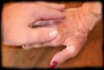
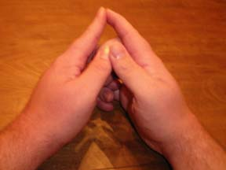
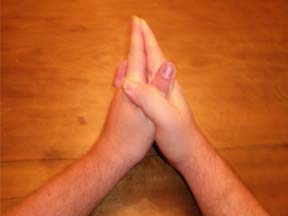
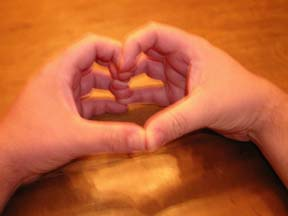
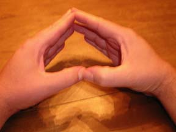
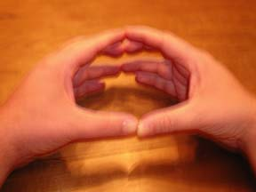
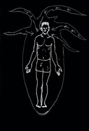

Техники питания
«Сытый энергетический вампир - счастливый вампир», он приносит пользу обществу. Мы часто забываем о питании и делаем это непреднамеренно, зачастую даже не осознавая сам процесс... Неосознанная подпитка чужой энергией - повод для негативных эмоций, ведущих к конфликтам. Таким образом, индивиды формируют о себе плохую репутацию для своего окружения и подводят остальных «нелюдей», формируя стереотипы. Выходит, что вампиры, питающиеся негативной энергией - "плохие"? Нет! Хотя получение энергии является необходимым, есть способы зацикливания энергии - трансформация получаемой негативной энергии в положительную.
Способы питания
Я расскажу о некоторых распространенных методах, которые используются для получения энергии. Первая техника - тактильное кормление. Вторая - направленное питание, называемое методом «Головы, сердца и рук». Очевидно, что большинство давно пробудившихся психических вампиров и гибридов знает эту технику. Третий метод является более распространенным и требует использования пси-щупалец. Я покажу применение и способы питания с помощью этого метода.
Несмотря на искусное владение техниками, важно знать о различных типах или уровнях питания: о питании эмоциями, о поверхностном и глубоком питании.
Питание эмоциями - поглощение энергии сразу нескольких представителей нынешнего окружения. Таким способом можно пользоваться на различных шумных и веселых мероприятиях, так как его смысл заключается в поглощении энергии толпы.
Поверхностное питание – поглощение астральной или эфирной энергии конкретных лиц.
Глубокое питание - подпитка от конкретных лиц, в основном жизненной энергией.
Тактильное питание

Тактильное питание является одним из самых простых способов. Случайное прикосновение, объятия или рукопожатия, поцелуи, секс подходят для поглощения энергии.
Есть еще один редко упоминаемый способ – «Метод руки господства». Все не так сложно, как кажется! Одна рука направляет энергию, а другая – принимает. Большинство людей – правши, и в превалирующем числе найденных вами книг на данную тему будет сказано, что левая рука энергию поглощает, а правая - высвобождает наружу. Однако у меня и некоторых пси правая рука поглощает энергию, а левая - отдает. По этой причине определенным псай-вампирам не нравятся рукопожатия. Понаблюдав за энергией после «пробы пера» одной рукой, а затем другой, легко определить, какой рукой пользоваться для забора энергии при использовании «тесных» контактов.
Питание взглядом или «глазной контакт» - еще один немало известный способ питания на расстоянии. Настоятельно рекомендую пользоваться этим методом только с разрешения человека, у которого собираетесь забрать энергию!
Направленное питание
«Голова, сердце и руки - священная триада».
Направленное питание обычно является одним из первых методов питания для новичков, ведь даже не пробудившиеся часто и подсознательно его практикуют. Встречаются люди, предпочитающие использовать «Метод головы, сердца и рук». Помимо методов питания здесь включены и другие позиции, связанные с «кормежкой». Практиковать это действо только на доноре или во время питания энергией из окружающей среды!
Наконец-то проделаем все, о чем было сказано выше. Начнем!


Это одна из двух основных методик, научитесь использовать ее для подпитки. Формируете стрелку, указывающую на «желаемого» донора или на толпу, и поглощаете окружающую энергию. Так просто инструкция не закончится! Важно не забыть сконцентрировать дыхание! На вдохе сосредоточьте внимание на рисунке и с чуть приоткрытым ртом начните вдыхать жизненную энергию.
Скрещивая пальцы сверху над стрелой, образуете пентаграмму. Используйте визуализацию поглощения энергии (да поможет вам богатое воображение). Используйте ту же технику, что была приведена выше для поглощения энергии.
Спустя немного времени выше описанные мною техники станут обыденными. Воспримите это, как сигнал к действию, так как теперь можно переходить к осваиванию второго типа питания. Одна из его главных проблем – заметность для «профессионалов». Это важно для вас, чтобы знать, что руки могут служить не только в качестве фокуса, но и для питания щупальцами. Хотя некоторые могут предпочесть один метод другому.
Приведу примеры других позиций соединения пальцев, которые вы также сможете использовать. Я попытаюсь объяснить их вам, хоть они и чрезвычайно просты. Не всегда просто найти такую специфическую информацию, поэтому я решил ее предоставить.

Это положение рук на рис. 3, как правило, означает получение энергии из человека. Иными словами, если у человека руки находятся в таком положении, человек принимает энергию.

Такое положение рук на рис. 4 представляет собой способ передачи энергии. Если сконцентрировавшись направить энергию другим псай-вампирам, то они часто отвечают жестом рук, изображенным на рис. 3. Хотя и не всегда так, известно, что из всех правил есть исключения.

Изображенное положение рук на рис. 5 означает лицо, «вездесущий»… Или указывает «на то, что делают ваши», как правило, знак означает, что вы находитесь под пси воздействием, или о нем говорили... Возможно, вы сделали что-то, что не должны были делать, но вам повезло...
Пси щупальца
Этот метод питания является более распространенным, потому что он сложнее поддается обнаружению. Этим особенно удобно пользоваться, когда вы в культуре пси и в шаге от осознания своей «вампирической» природы... Итак, попытаюсь объяснить различные варианты использования техники щупалец.
По моим наблюдениям все психические вампиры и гибриды обладают энергетическими щупальцами. Щупальца представляются бесцветными, серыми или же еще какими-то. Это не важно, раз у каждого свое восприятие. Потом, после перехода на этот уровень, вы поймете, что руки в направленном методе кормления, просто служат фокусом вашего щупальца.

Требуются некоторые умения концентрации взгляда, и стоит ознакомиться с энергетической манипуляцией. Сфокусируйтесь на доноре. Сконцентрируйте ваш разум, представьте себе длинное щупальце, ползущее от вашей «ауры» к «ауре» донора. Нужно прикрепить щупальце так, чтобы оно проникло к нему. Пробуйте пока не выйдет! Представьте его полым и выкачивайте в себя энергию, как будто через трубку. На вдохе поглощайте энергию. Используйте первый метод в качестве примера.
Другой способ – использование чакры. Обычно используются чакры пупка или «третий глаз», затем визуализируется щупальце и поглощается энергия.

Источник: psychicvampire.org

Перевод: eclipse.
Редактирование: KyleRozenrot.
(собственность vampirecommunity.ru)
[Наверх]